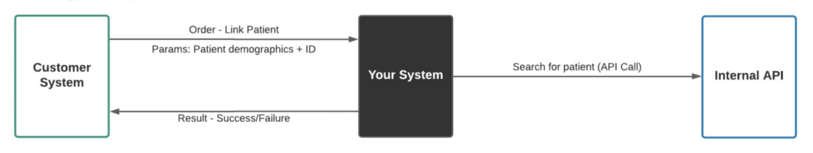
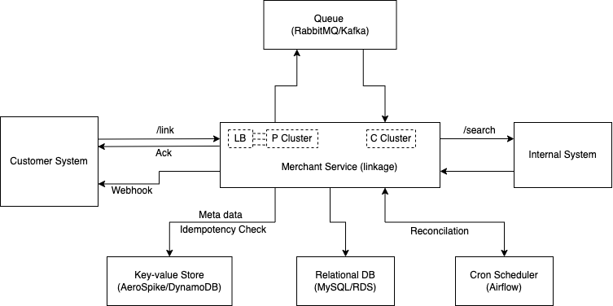

Anatomy of a System Design Interview: The example
·
System Wisdom·
#Project
#Database
#System Design 9 min read
9 min read
Complex is Simple.
What’s better than going over a real system design interview question (Interviewed in June 2022).
1. Requirements
Review the end-to-end design below. You need to design Your System. Your system is responsible for linking a customer patient to an internal system, maintaining that mapping, and letting the customer system know whether your system was able to establish the link.
- Communication is Asynchronous.
- Orders must be acknowledged as soon as possible.
- System must be fault-tolerant.
- System must be reliable, available and scalable.
- System needs to persist the patient’s ID from both the customer and the internal system.

Expected Design
2. Overview
2.1. Architecture Diagram

Architecture Diagram
Link: https://drive.google.com/file/d/1xCP9EpqqrDzCT2jd47ke6WlX69TD4NSk/view?usp=sharing
2.2. Components
The overview of the different components of the merchant service is as follows:
-
Merchant Service: A proxy-link service (like a merchant who buys and sells) links the customer’s patient-id to internal system’s
patient-id. -
LB (Load Balancer): Receives public traffic and distributes the load across the merchant-service producer cluster (compute instances).
-
P Cluster: The merchant-service application producer cluster that scales horizontally (Example: EC2 cluster with auto-scaling and target group attached to the load balancer), receives the requests from the load-balancer and push messages to the queue.
-
Queue: A messaging broker to handle high traffic to process long-running/asynchronous tasks in streams/batches.
-
C Cluster: The merchant-service application consumer cluster processes the messages in the queue and returns the appropriate response.
-
Cron Scheduler: Schedule cron jobs to reconcile the workflows stuck in pending state(s).
-
Relational DB: The database primarily has two tables: “workflows” to track and manage the state of the incoming requests until completion and
patient-mappingto store the mapping between customer and internalpatient-id. -
Key-value Store: For storing the incoming request data (customer and patient details) and idempotency-key of requests.
2.3. Datastores
2.3.1 Relational Database (SQL)
-
Workflow: A
workflowstable to keep track of the request received from the customer and manage the state until the state transitions to an end-state.-
Table workflows:
workflow-id request-id customer-id patient-id status request-type -
Where, status:
RECEIVED,IN_PROGRESS,LINKED,NO_RESULTS,COMPLETED,FAILEDand request-type:LINK
-
-
Linkage: A
patient-mappingtable links the customer patient-id to the internal patient-id.-
Table patient-mapping:
customer-id customer-patient-id internal-patient-id status workflow-id -
Where, status:
LINKED,DE-LINKED
-
2.3.2. Key-value Store (NoSQL)
-
Idempotency: Key: (
idempotency-key+customer-id), Value: idempotency key from client/customer. -
Request Data: Key: (Unique
request-id), Value: Request data (customer and patient details).
3. Workflow
3.1. Request from Customer System
API call from the Customer System to the load-balancer of Merchant Service.
Method: POST, Path: /link
Header:
"idempotency-key": "String"
"customer-token": "String"
Request Body:
{
"patient": {
"id": "UUID",
"full_name": "String",
"dob": "DateTime",
...
"contact": {
"address": "String",
"phone": "String",
"email": "String"
}
"insurance": {
...
}
},
"webhook": "url"
}
To perform an idempotent request, the customer/client must add an idempotency-key header to the request. Idempotency works by saving the resulting status code, response body and body of the first request made for the given idempotency key; subsequent requests with the same key return the same result (or until the state changes) until the pre-defined TTL (typically, 24 hours).
The customer-token is for access control and decrypted on the backend to retrieve the customer details (Example: unique customer-id). Similar to the JSON Web Token model.
3.2. Acknowledgement: Fail first and Fail Fast
-
Validations: Regex matching on expected input pattern, idempotency check, already linked or in progress, etc.
-
Persistence:
-
Request Data: Store the request data in the key-value store (key as unique request-id and value as request data - Customer and Patient details).
-
Workflow details: in the “workflows” table:
workflow-id,request-id,customer-id,patient-id,status(RECEIVED),request-type(LINK), andtimestamp.
-
-
Queue: Push the message to the queue (section 3.3) - silent failure with retries
- Response:
- Return error response/exception(s) before or during persistence - if any (fail fast),
- Else
- Store the
idempotency-keywith expected response - Return the response with a status code 202 (Request accepted) and a
workflow-id. The client/customer can check the request’s status using theworkflow-id. The response body:{ "workflow-id": "String" }
- Store the
- Status API:
- The merchant service guarantees a valid response once a 202 is returned with a
workflow-id. The customer/client can check the status of the request from theworkflow-idor get a callback to the webhook. - Method:
GET, Path:/link/status/<workflow-id>Response:{ "status": "workflows.status" }
- The merchant service guarantees a valid response once a 202 is returned with a
Note:
-
The request data can be archived if necessary after linking customer-internal
patient-id. -
It is not recommended to poll the status API; caching may be required if done.
3.3. Process the request
The merchant service producer pushes the message to the queue in the forward flow (section 3.2) or reconciliation (section 4). The message body is as follows:
{
"workflow-id": "String",
"request-id": "String",
"customer-id": "String",
"patient-id": "String",
"request-type": "LINK",
}
The merchant service consumer picks the message(s) from the queue:
-
Workflow Details: Get details from the
workflowstable byworkflow-idand update the workflow status toIN_PROGRESS. -
Patient and Customer Details: Get the customer and patient details from
request-idfrom the key-value store. -
Search: Make an API call to the internal service to search for the patient:
-
Empty Search result: Mark the status
NO_RESULTSin the workflow table. -
Non-empty Search result: Create an entry in the
patient-mappingtable (customer-id,customer-patient-id,internal-patient-id,status,workflow-id), mark the statusLINKED.
-
-
Response: Update response in NoSQL store for
idempotency-key, return the success/error response (webhook), and mark the statusCOMPLETEDin theworkflowstable.
Note:
-
Failures are marked as
FAILEDin theworkflowstable to retry/debug (Wildcard to stop a workflow). -
Use a finite state machine with predefined from-to states and transitions.
-
The webhook URL is usually not a part of the request but rather configured beforehand as a part of merchant-customer onboarding and available as a part of customer details.
4. Fault tolerance and Reconciliation
4.1. Application Failure
Reconciliation is necessary to ensure that a request is processed after responding to the customer system’s request with a 202 response and workflow-id. At this stage, we have an entry in the workflows table and a key-value pair of the request data containing the customer and patient details.
The scheduler such as Airflow is configured to check for workflows in pending state(s) (RECEIVED, IN_PROGRESS, LINKED, NO_RESULTS) beyond an expected time interval. For instance, if the expected processing time is at most 7 minutes, the workflows with (current timestamp - updated_at) > 7 minutes are put back into the queue until it reaches an end state (limit on the number of retries). Followed by an hourly or daily report for workflows stuck in a pending state for further debugging.
Hence a cron job/scheduler runs at a frequency (say, every 5 minutes) to check for workflows in pending state(s).
4.2. Resource Failure
Fault tolerance and high availability go hand-in-hand. While HA ensures minimal service interruption, fault tolerance aims for no service interruption or zero downtime, resulting in a higher cost. Typically satisfied with standby servers and storage systems to switch to in the case of failovers. For example:
-
MySQL/RDS: Automatically switch to a standby replica or secondary instance in another Site/Availability Zone (Multi-AZ DB instance).
-
Compute/EC2: Stand-by consumer/producer cluster spread across sites/AZs to handle failovers.
-
Aerospike/DynamoDB: Nodes in a multi-site/AZ cluster are identically sized and evenly distributed across all sites to handle failovers and enable symmetry in performance and recovery.
-
Message Bus/Queue: In Kafka - done by copying the partition data to other brokers (replicas) by setting a suitable replication factor.
Lastly, a time-series data store (InfluxDB) for application events and Anomaly Detection and Remediation: https://www.pyblog.xyz/anomaly-detection-and-remediation
5. Scalability, Availability, and Reliability
The scalability, availability, reliability, and fault tolerance of the merchant service are dependent on the components mentioned in section 2.2.
-
The use of load balancers allows us to horizontally scale the application to handle traffic by increasing/decreasing the number of instances in the producer/consumer cluster. Further, health checks ensure high cluster availability and reliability by deregistering unhealthy instances and spinning up new healthy instances.
-
Messaging brokers/bus such as RabbitMQ/Kafka have built clustering abilities, scales horizontally, and is HA (Highly Available). Moreover, even if the messages in the queue are lost, we can always reproduce the messages by reconciliation (section 4).
-
The NoSQL databases and relational databases (ACID vs BASE) are scalable when sharded horizontally. Furthermore, using the master-slave configuration combined with frequent snapshots offers availability and reliability.
-
Workflow orchestrator/Scheduler such as Airflow is a highly available service and plays a prominent role in timely reconciliation. That said, the scheduler’s unavailability may delay the response time for failed processes until recovered.
6. Assumptions
6.1. Unique Search Result
The search API returns a single patient entry; however, to handle a list of patients in the search result, one possible approach is to pick the best result, and link automatically or let the customer/client decide the best link (compliance and patient data privacy?).
6.2. Sync Search
The API call to the internal system to search for the patient is synchronous. However, the async API call working is as follows:
-
The search API request to the internal system returns a 202 status code with
search-id, and the callback URL is pre-configured (webhook). -
The
search-idis now a column in theworkflowstable. -
The search search-id is saved in the
workflowstable with the statusREQUESTED, which falls under pending state(s) to perform reconciliation beyond a time interval. -
Note: Search call to the internal system is made after receiving the message from the consumer and not before pushing the message to the queue in the producer; hence search-id is initially NULL.
6.3. Patient Details
The /link API is meant for acknowledging the link status, and another API
/patient/<patient-id> gives the patient details after a successful link.
7. Questions
| Question | Sections |
|---|---|
| How should the link request work? | 3.1, 3.2, 3.3 |
| What does your system do when it receives the request? | 3.1, 3.2 |
| How and when does it respond? | 3.2, 3.3 |
| What data stores does your system use? | 2.3 |
| What are all the things you need to consider in terms of reliability, availability, scalability? | 4, 5 |
| How is your system fault tolerant? | 4, 5 |
| What does your overall solution look like and what are the components inside your system? | 2, 3 |
| Describe the APIs, responses, any behaviors you have designed within your system | 3.1, 3.2, 3.3 |

Cite this article as: Adesh Nalpet Adimurthy. (May 25, 2022). Anatomy of a System Design Interview: The example. PyBlog. https://www.pyblog.xyz/tackle-system-design
 #index
#index